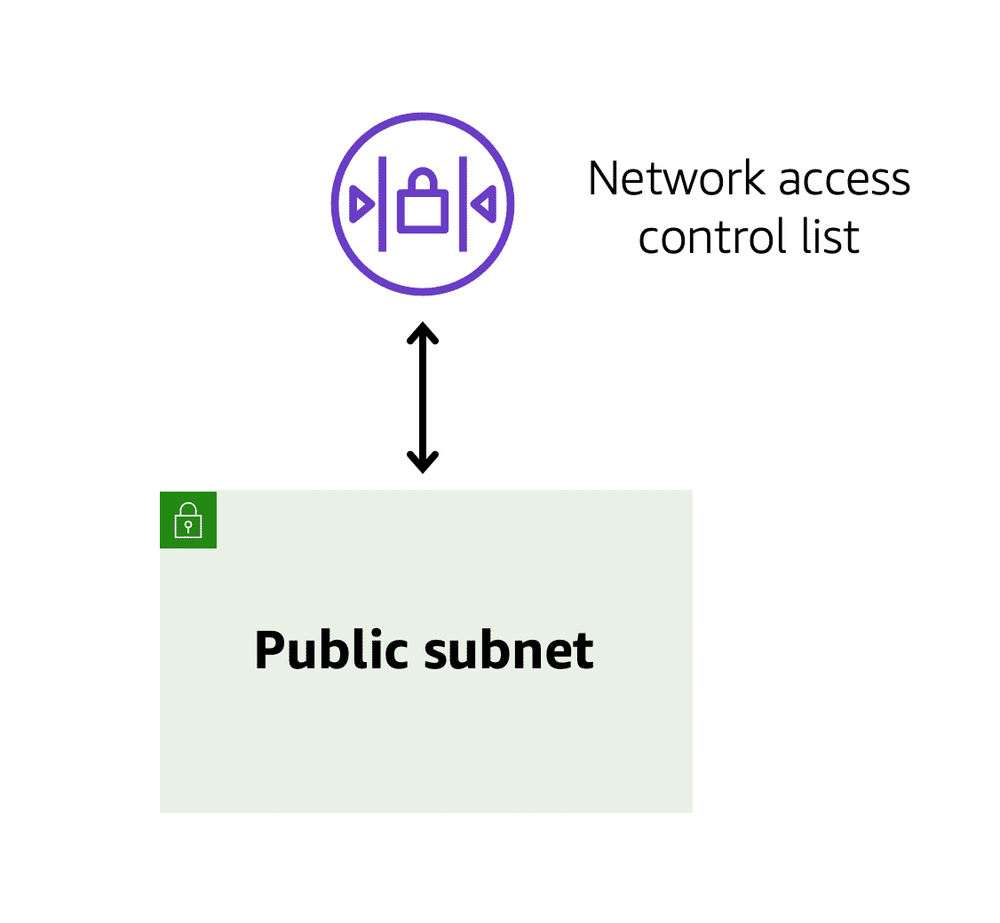
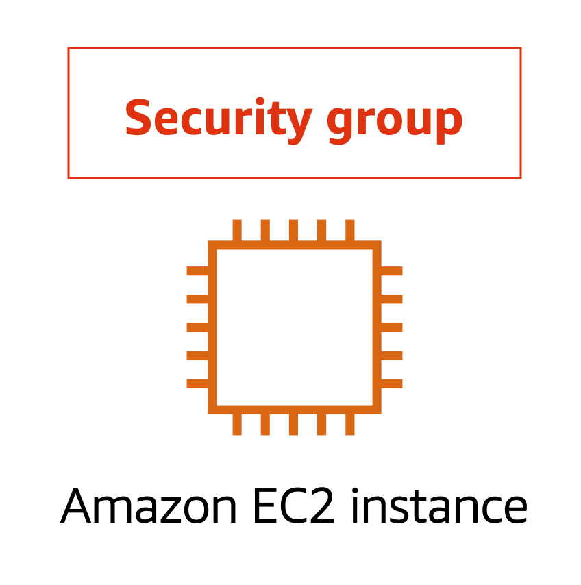

12 Subnets and Network Access Control Lists
Your Virtual Private Cloud (VPC) is like a fortress; nothing enters or exits without your explicit permission. Think of your virtual private cloud (VPC) as a high-security building with distinct rooms (subnets), and rigorous security measures (Network Access Control Lists, or NACLs), regulating who can enter and exit each room. Let’s explore how this works and why it’s essential for your network security.
12.0.1 Background and analogy
Imagine you own a large, secure building (your VPC). This building has multiple rooms, each with different purposes and levels of access:
- Public room: This room is like the lobby of your building, accessible to anyone who walks in from the street (internet). This is where you place resources like your website, which need to be accessible to the public.
- Private room: This room is deep inside your building, accessible only to authorised personnel. This is where you store sensitive information, like customer databases.
To control access to these rooms, you have two types of security personnel:
- Network ACLs: These are like passport control officers at the border of each room (subnet). They check the credentials of every person (data packet) entering or leaving the room.
- Security groups: These are like doormen at the entrance of each office (EC2 instance). They ensure only authorised individuals can enter specific offices.
12.0.2 Subnets
A subnet is a section of your VPC where you can group resources based on security or operational needs. Subnets can be public or private:
- Public Subnets: These contain resources that need to be accessible by the public, such as a website.
- Private Subnets: These contain resources that should only be accessible through your private network, like a database.
For example, you might have an application where the web servers are in a public subnet, and they communicate with databases in a private subnet.

12.0.3 Network Traffic in a VPC
When a customer requests data from an application hosted in the AWS Cloud, this request is sent as a packet (a unit of data). This packet enters the VPC through an internet gateway and must pass through several security checks before reaching its destination.
12.0.4 Network ACLs
A Network Access Control List (NACL) is a virtual firewall that controls inbound and outbound traffic at the subnet level:
- Inbound Rules: These rules control incoming traffic.
- Outbound Rules: These rules control outgoing traffic.
Think of a NACL as a passport control officer at the border of a country. This officer checks travelers’ credentials when they are entering and exiting the country. If the traveler (data packet) is on the approved list, they can pass. If not, they are denied entry.
Each AWS account includes a default NACL. By default, this NACL allows all inbound and outbound traffic, but you can modify it to add specific rules. For custom NACLs, all traffic is denied until you add rules to allow specific traffic.

12.0.5 Security Groups
While NACLs control traffic at the subnet level, Security Groups control traffic at the instance level:
- Each EC2 instance has an associated security group.
- By default, a security group blocks all incoming traffic and allows all outgoing traffic.
- You can modify security group rules to allow specific types of traffic, such as web traffic (HTTP/HTTPS).
If NACLs are like passport control, security groups are like doormen at the entrance of an office. They ensure that only authorised traffic can enter the instance.

12.0.6 Example Scenario
Let’s walk through an example of how a packet travels from one instance to another in a different subnet:
- Instance A (Source):
- The packet leaves Instance A and passes through its security group. Since security groups allow all outbound traffic by default, the packet can leave without any issues.
- The packet then reaches the boundary of the subnet and must pass through the NACL. If the packet is allowed by the NACL, it can proceed.
- Subnet Boundary:
- The packet crosses into the target subnet and must pass through the NACL at this boundary. If it’s allowed, it can enter the subnet.
- Instance B (Destination):
- The packet reaches Instance B and must pass through its security group. If the security group allows the traffic, the packet reaches its destination.
- Return Traffic:
- When the packet returns, the security group of Instance B allows it to leave (default behavior).
- The NACL at the subnet boundary checks the packet again.
- The packet crosses into the original subnet and passes through its NACL.
- Finally, the security group of Instance A recognizes the returning packet and allows it in.
By using both NACLs and security groups, AWS ensures a robust and layered security approach for your VPC. NACLs provide broad subnet-level security, while security groups offer fine-grained instance-level security. Together, they help keep your network secure and functional, much like the combined efforts of passport control officers and doormen in a high-security building.
This layered security model is crucial for protecting your AWS infrastructure and ensuring that only authorised traffic can access your resources.
For more detailed information and additional training on AWS security, be sure to follow the provided links and enhance your knowledge to secure your infrastructure effectively.
12.0.7 Understanding Stateless and Stateful Packet Filtering in AWS
Ensuring the security of your network traffic is essential when working with AWS. Two fundamental mechanisms that AWS provides for this purpose are Network Access Control Lists (NACLs) and Security Groups. These tools are used to filter traffic, but they operate in different ways: stateless packet filtering and stateful packet filtering.
12.0.8 Stateless Packet Filtering with NACLs
Network ACLs perform stateless packet filtering, meaning they do not remember previous decisions and evaluate each packet crossing the subnet boundary individually.
Analogy: Imagine you’re at an airport trying to enter a different country. Each time you arrive at the passport control (network ACL), the officer checks your documents regardless of whether you’ve entered before. Similarly, NACLs check each packet against their rules for both inbound and outbound traffic.

Source: AWS Cloud Practitioner Essentials
- Inbound Traffic: When a data packet (traveller) arrives at the subnet border (country’s border), the NACL checks its credentials (source IP, protocol, port) against a list of rules. If approved, the packet is allowed in; otherwise, it’s denied entry.
- Outbound Traffic: When a packet leaves the subnet, the NACL checks it again, ensuring it meets the outbound rules before allowing it to exit.
Example: Consider a request sent from an Amazon EC2 instance to the internet. When the response packet returns, the NACL doesn’t remember the initial request. It evaluates the response packet against its rules to decide whether to allow it into the subnet.
12.0.9 Stateful Packet Filtering with Security Groups
Security Groups perform stateful packet filtering, which means they remember previous decisions regarding incoming packets and allow responses based on this memory.
Analogy: Picture an apartment building with a door attendant (security group) in the lobby. When guests (packets) arrive, the attendant checks a list to ensure they’re allowed entry. Once inside, the attendant remembers these guests and does not check the list again when they exit.

Source: AWS Cloud Practitioner Essentials
- Inbound Traffic: By default, a security group denies all inbound traffic. You can add rules to allow specific types of traffic, such as HTTP or SSH.
- Outbound Traffic: By default, a security group allows all outbound traffic. You can modify these rules if needed.
Example: Suppose an EC2 instance sends a request to the internet. When the response packet comes back, the security group remembers the initial request and allows the response to enter, even if the inbound rules do not explicitly allow it.
12.0.10 Comparing NACLs and Security Groups
Understanding the differences between NACLs and Security Groups is crucial:
- Network ACLs:
- Stateless: They do not remember past decisions.
- Subnet-Level: Control traffic at the subnet level.
- Rules: Evaluate both inbound and outbound traffic separately.
- Security Groups:
- Stateful: They remember past decisions.
- Instance-Level: Control traffic at the instance level.
- Rules: Allow all outbound traffic by default and evaluate inbound traffic based on rules.

12.0.11 VPC Component Recap
Here’s a quick recap of the VPC components we’ve discussed:
- Subnets: Segments within a VPC that can be public or private, controlling access based on security needs.
- Network ACLs: Stateless firewalls at the subnet level, controlling inbound and outbound traffic.
- Security Groups: Stateful firewalls at the instance level, controlling inbound traffic and allowing outbound traffic by default.
- Internet Gateway: A gateway that allows communication between the VPC and the internet, used by public subnets.